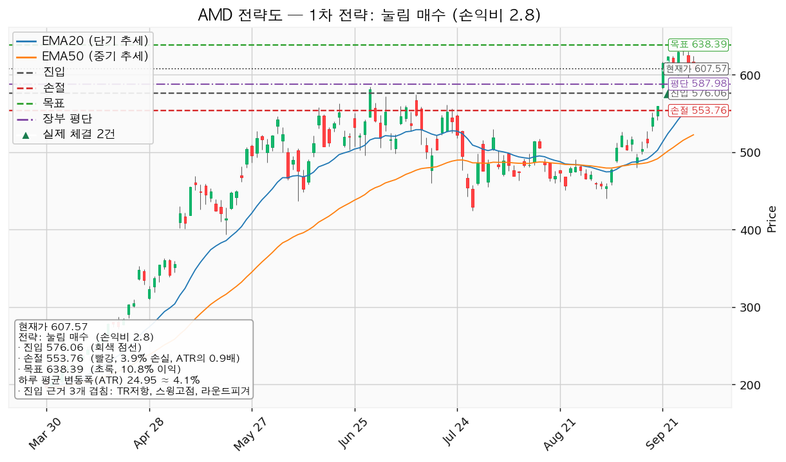
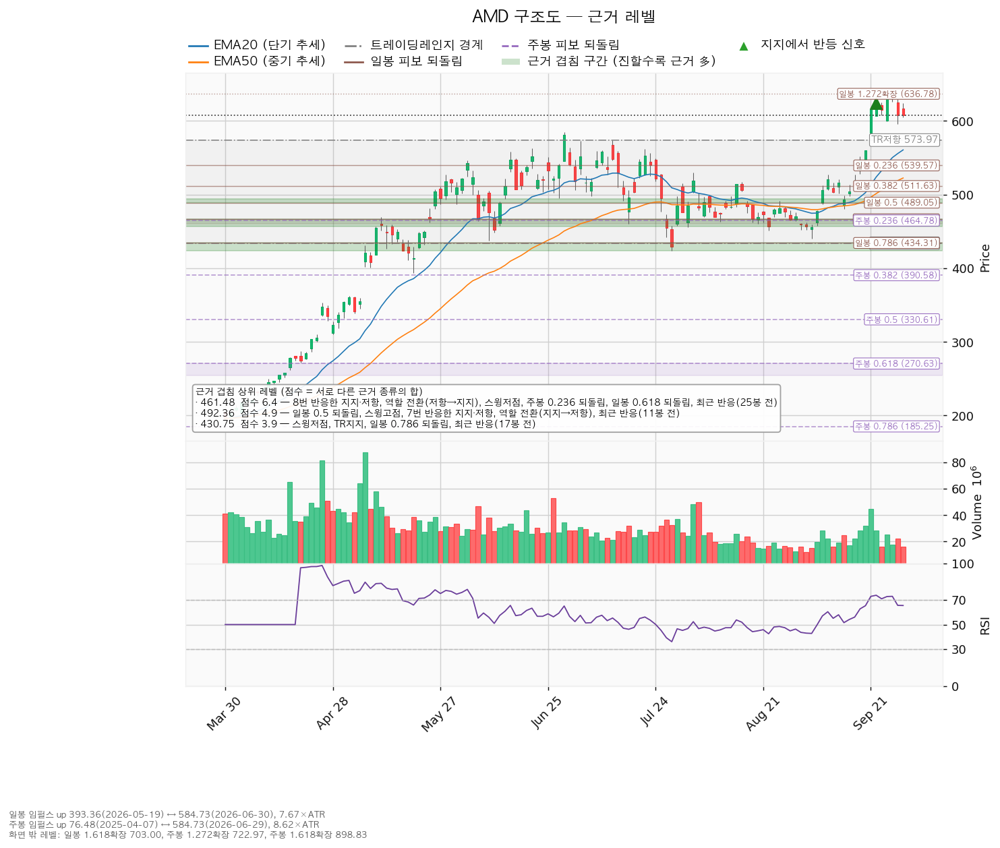
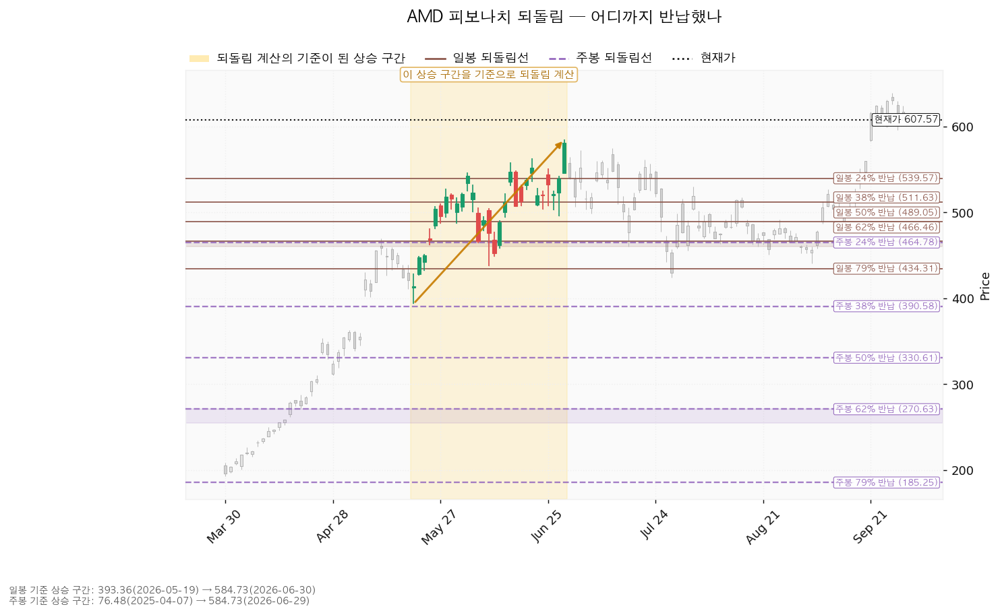
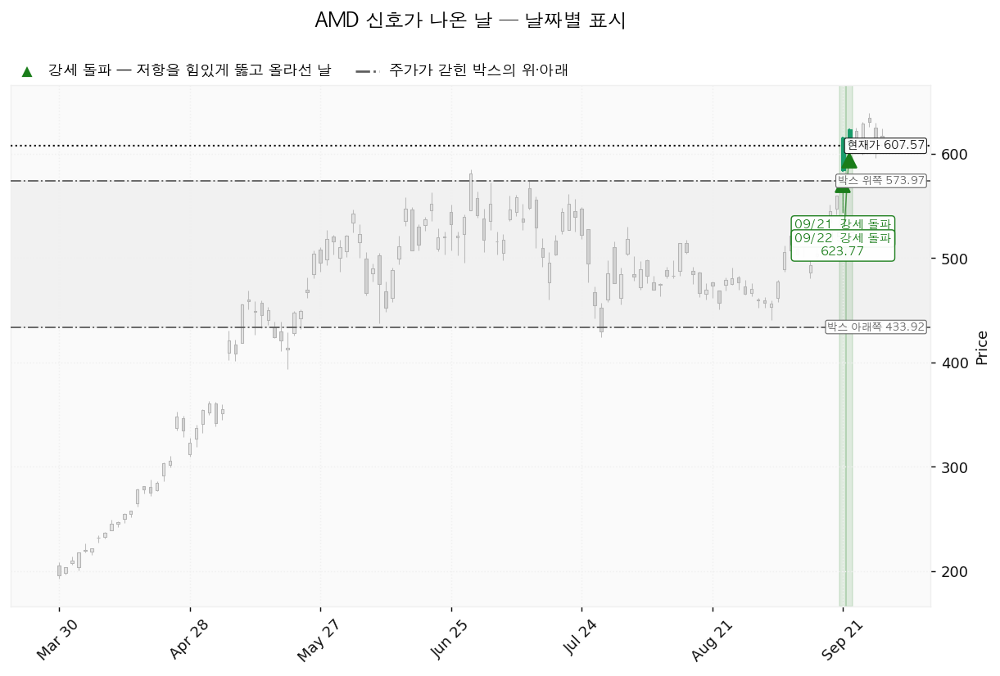

AMD(Advanced Micro Devices)는 PC·서버용 CPU와 데이터센터 GPU, 게임기용 반도체를 설계하는 미국 기업입니다.
| 구분 | 가격 | 판정 방식 | 현재 상태 |
|---|---|---|---|
| 회복선 | 461달러 (-24.04%) | 일봉 종가 회복 후 되돌림 지지 | 회복 완료 (8번 반응한 지지·저항 + 역할 전환 + 스윙저점) |
| 집행 손절 | 554달러 (-8.86%) | 저가 터치 | 보유 3주에 유효, 576달러 매수 시 그 물량에도 유효 |
| 관망 종료 기준 | 551달러 (-9.29%) | 일봉 종가 이탈 | 유지 중. 이탈하면 매수 계획 종료 — 새 리포트 대기 |
| 확인선 | 492달러 (-18.96%) | 일봉 종가 돌파 후 되돌림 지지 | 돌파 완료. 박스 상단 574달러는 그 위 맥락 |
| 폐기선 | 434달러 (-28.58%) | 이탈 후 3거래일 내 회복 실패 + 반등에서 저항 확인 | 유지 중. 하루 평균 변동폭의 6.96배 아래라 실무상 작동하지 않음 |
눌림형이라 거래량은 말라야 정상인데 0.88배로 아직 줄지 않았습니다. 지수 대비 초과수익은 20일 +29.27% · 60일 +8.29% · 120일 +148.99%, 가중(20일 0.45 · 60일 0.30 · 120일 0.25) +52.91%입니다.
직전의 576달러 되돌림 매수는 미충족(진행 중)입니다 — 09-28 종가 607.87달러, 현재가 607.57달러(직전 630.63달러 대비 -3.66%)로 576달러·551달러·544달러 어느 것에도 닿지 않았습니다. 09-25에 충족된 638달러 전량 매도 (목표 도달)는 미집행이며 보유 3주가 장부에 남아 있습니다(미집행 매도 신호 1회).
집행 손절이 544 → 554달러로 올라갔습니다. 20일선이 550 → 561달러로 올라와 가장 가까운 아래쪽 겹침 구간이 560~561달러로 바뀌었기 때문이며, 손절 폭이 1.30 → 0.89 ATR로 좁아져 손익비가 1:1.95 → 1:2.80이 됐습니다. 손익비 상승은 손절 폭 축소에서 나왔고 진입 근거는 직전과 같습니다. 진입 576·목표 638·회복선 461·확인선 492·폐기선 434·관망 종료 기준 551달러는 같습니다. 판단도 같습니다(576달러 대기). 직전에는 보유 3주에 손절을 걸지 않았으나, 매도가 집행되지 않은 채 가격이 목표 아래로 내려왔으므로 이번에는 같은 554달러 손절을 보유분에도 겁니다.
| 항목 | 내용 |
|---|---|
| 셋업 | 되돌림 매수 · 선취형(구조 미확인, 가중치 0.7) — 진입가는 유리하나 구조가 증명되기 전에 잡음 |
| 진입 | 576달러 되돌림 시 (-5.19%, 1.26 ATR 아래). 장부 평단 587.98달러 아래라 평단을 낮추는 매수 |
| 진입 근거 | 세 근거 겹침 — 박스 상단 저항 + 스윙고점 + 라운드피겨 580달러 (574~580달러) |
| 손절 | 554달러 — 560~561달러 겹침 구간 바로 아래 |
| 목표 | 638달러 (일봉 1.272 확장 + 라운드피겨 640달러) 단일 전량 매도, 트레일링 없음 |
| 손익비 | 1:2.80 (손절 0.89 ATR). 구조적 손절 기준 손익비는 산출되지 않음 |
| 엣지 | 평균회귀 — 지지로 눌릴 때 산다. 승률이 높고 이익 폭이 작은 유형이라 저항에서 전량 매도가 정합적(이 유형의 일반적 성격이며 측정값 아님) |
| 비중 | 20주 · 15,581,731원 (계좌의 11.17%) |
대표로 고른 이유는 손익비 2.8 × 선취형 × 세 근거 겹침이며, 지수 대비 20일 초과수익 +29.27%로 1.1배가 곱해졌습니다. 638달러 종가 돌파 후보(근거: 일봉 1.272 확장 + 라운드피겨)는 돌파 확인형이라 구조 증명도는 높지만 손익비 1:1.20이고 돌파 구간 거래량이 20일 평균의 1.14배에 그쳐 순위가 0.958 대 2.054로 밀렸습니다. 진입~목표가 2.50 ATR이나 분할하면 전 구간 1:1.94, 본전 스탑 하한 1:0.54로 내려가 단일 매도로 둡니다. 보유 3주(평단 587.98달러, +3.33% · +79,492원)는 638달러에서 매도하면 +204,538원, 554달러에서 매도하면 -138,833원입니다.

| 단계 | 트리거 | 의미 | 행동 |
|---|---|---|---|
| 1 관찰 | 일봉 종가가 576달러 아래로 마감 | 되돌아 올라오면 속임수 하락일 수 있어 아직 무효가 아님 | 신규 진입만 중단 |
| 2 경고 | 이탈 후 3거래일 안에 576달러를 종가로 회복하지 못함, 또는 그 전에 일봉 종가가 551달러 아래로 마감 (하루 평균 변동폭의 1배만큼 더 밀림) — 둘 중 먼저 오는 쪽 | 되돌림 지지 상실 가능성이 우세 | 매수 계획 종료 — 새 리포트 대기 |
| 3 무효 | 반등이 576달러에서 막히고 그 아래로 되밀림 | 구조 해석이 틀린 것으로 확정 | 남은 물량 전량 매도 (시나리오 폐기) |
집행 손절 554달러는 단계와 무관하게 저가가 닿으면 작동합니다. 폐기선 434달러는 가격 기준으로 쓸 수 없으므로, 논지 무효화는 2026-11-04 실적에서 내년 EPS 컨센서스 15.58달러가 하향으로 돌아서거나 영업현금흐름이 전년 77.09억달러 아래로 꺾이는 경우로 겁니다.
상승 전환 — 638달러를 일봉 종가로 넘기면 상승 확정이며 이 계획은 638달러 전량 매도로 끝나고 그 위는 새 리포트로 잡습니다. 09-21·09-22 거래량 실린 상승 신호(SOS)가 그 방향의 근거입니다.
횡보 지속 — 551달러 위, 638달러 아래에서 매물을 소화하는 국면이며 부정적 신호가 아닙니다. 576달러에 닿으면 계획대로 매수합니다. 추적 항목은 지지 테스트 거래량(1.00 → 1.18 → 1.17 → 0.64 → 0.83배, 감소), 저점 절상 유지, 상승봉 대 하락봉 거래량비 1.12입니다.
시나리오 폐기 — 434달러 이탈 후 3거래일 내 종가 회복 실패(또는 그 전에 409달러 아래 종가 마감)와 반등이 434달러에서 막히는 것을 확인하면 재분산으로 보고 관망합니다.
| 가격 | 겹친 근거 | 최근 반응 |
|---|---|---|
| 638달러 | 일봉 1.272 확장 + 라운드피겨 | — |
| 576달러 | 박스 상단 저항 + 스윙고점 + 라운드피겨 | — |
| 561달러 | 라운드피겨 560 + EMA20 + 스윙고점 | — |
| 535달러 | 스윙고점 + 일봉 0.236 되돌림 | 14봉 전 |
| 517달러 | 일봉 0.382 되돌림 + 스윙고점 + EMA50 | 14봉 전 |
| 492달러 | 일봉 0.5 되돌림 + 스윙고점 + 7번 반응한 지지·저항 + 역할 전환(지지→저항) | 11봉 전 |
| 461달러 | 8번 반응한 지지·저항 + 역할 전환(저항→지지) + 스윙저점 둘 + 주봉 0.236 + 일봉 0.618 되돌림 | 25봉 전 |
박스는 751개 일봉 중 최근 90봉으로 판정했습니다(안에 머문 비율 0.90, 방향 쏠림 0.036; 40봉은 쏠림 1.453, 180봉은 0.774로 박스가 아님). 직전 구간 189~363달러를 위로 돌파해 올라온 박스이며, 안쪽 판정은 매집 우위입니다 — 지지 테스트마다 매도 거래량 감소, 저점 절상, 상승봉 거래량이 하락봉의 1.12배. 현재가는 박스 상단 574달러 위에 있습니다.

일봉 되돌림은 393.36달러(05-19) → 584.73달러(06-30), 주봉은 76.48달러(2025-04-07) → 584.73달러 구간 기준이며 직전과 같습니다. 위쪽 확장은 일봉 1.272 637달러, 주봉 1.272 723달러입니다.

날짜 신호는 상승 신호(SOS) 둘(09-21 615.52달러, 09-22 623.77달러)로 직전과 같고 그 뒤 새 신호는 없습니다. 국면 후보는 상승 진행입니다.

후행 PER 156.19배, 선행 39.00배로 벌어진 것은 EPS가 올해 +81.7%, 내년 +105.6%(15.58달러) 늘어나는 구간이기 때문입니다. 목표주가는 50명 평균 618.51달러, 최저 365.00달러, 최고 1,250.00달러이며 현재가는 평균보다 -1.77% 아래, 최저보다 위입니다. 이번 -3.66% 하락은 내년 EPS 추정치가 90일 +18.2% · 30일 +1.6% 오르는 중에 나온 배수 수축이고, 상향은 속도가 줄었지만 진행 중이라 확인 항목은 다음 실적입니다(올해분 90일 +2.6% · 30일 +0.1%). 현금흐름은 흑자입니다(2025-12-31 결산, 영업 +77.09억달러, 잉여 +67.35억달러, 설비투자 9.74억달러로 +53.1%). 평균 목표의 내재 배수는 내년 EPS 기준 39.70배로 현재 39.00배와 비슷해 상승분은 이익 증가에서 오고, 목표 638달러의 내재 배수는 40.98배로 소폭의 배수 확장이 필요합니다. 컨센서스는 12개월, 이 셋업은 수 주 시계입니다.
2026-11-04 3분기 실적 — 내년 EPS 15.58달러 상향 지속 여부, 영업현금흐름이 전년 77.09억달러 수준을 지키는지. 다음 실적 이후 구간은 확인할 자료가 없습니다.
1% 리스크 기준 산출 비중은 계좌의 25.8%라 13% 상한(18,134,792원)을 적용했고, 보유 3주를 포함해 총 23주가 되도록 20주를 삽니다(합계 12.85%). 상한 때문에 신규분 리스크는 계좌의 0.43%(603,188원), 보유분 포함 AMD 전체는 0.59%(821,513원)입니다. 매수 후 반도체 테마는 8.18% → 19.35%, 전체 미결제 리스크는 1.38% → 1.78%로 한도 안입니다. 하루 평균 변동폭은 주가의 4.11%로 8% 기준 아래지만, 손절 폭이 그 0.89배로 하루치 변동보다 좁아 논지와 무관한 하루 흔들림에도 554달러가 닿을 수 있습니다. 최종 판정: 576달러 되돌림에서 20주 매수, 554달러 손절, 638달러 전량 매도, 손익비 1:2.80. 조건 점검 7/9, 미달은 상대강도선 신고가·거래량 강도입니다.
용어: ATR = 하루 평균 변동폭(24.95달러). EMA = 지수이동평균. RSI = 상대강도지수(현재 65.5). SOS = 거래량이 실린 상승 신호. EPS = 주당순이익. PER = 주가수익비율.